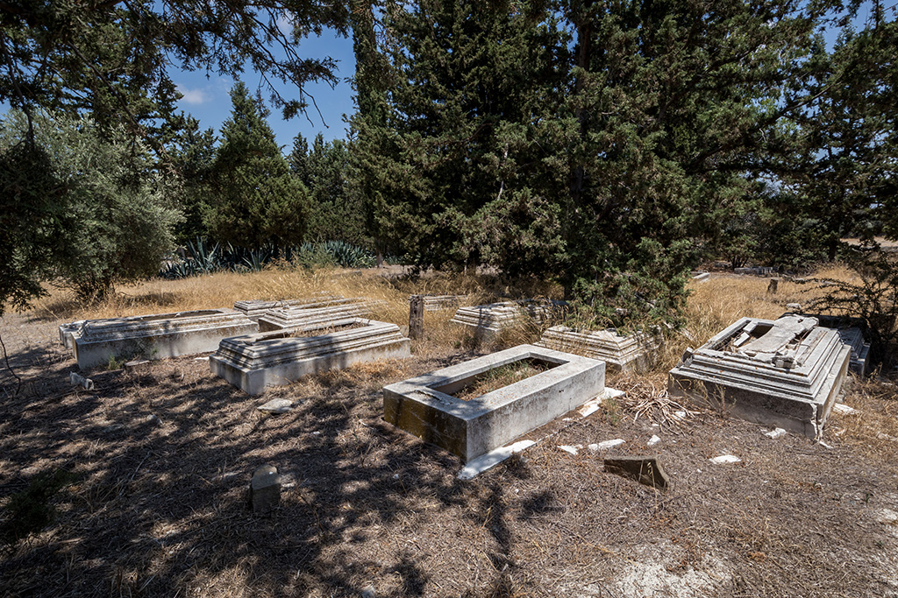

The Turkish-Cypriots of Kophinou and the neighbouring villages buried their deceased in this cemetery since the second quarter of the 20th century, as evidenced from fragmentary tombstones. Turkish-Cypriots still visit their dead and leave flowers, despite the current abandoned state of the cemetery.
Οι Τουρκοκύπριοι κάτοικοι της Κοφίνου και των γύρω περιοχών ενταφίαζαν τους νεκρούς τους σε αυτό το κοιμητήριο από το δεύτερο τέταρτο του 20ου αιώνα, όπως φαίνεται από τα διάσπαρτα τμήματα των επιτύμβιων στηλών που βρίσκονται σήμερα στο χώρο. Όπως βλέπετε, το νεκροταφείο είναι πλέον εγκαταλειμμένο. Παρόλα αυτά, Τουρκοκύπριοι επισκέπτονται περιστασιακά ακόμη και σήμερα κάποιους από τους τάφους και προσφέρουν λουλούδια.
Kofinu'daki Kıbrıslı Türkler ve komşu köyler, parçalanmış mezar taşlarından da anlaşılacağı üzere, 20. yüzyılın ikinci çeyreğinden itibaren ölenlerini bu mezarlığa gömdüler. Kıbrıslı Türkler mezarlığın şu anki terk edilmiş durumuna rağmen halâ ölülerini ziyaret ediyor ve çiçek bırakıyor.
You are standing at the southeast entrance of the cemetery, while there are two others on the north and south. This entrance differs from the other two as it is higher than the enclosure wall and bears the emblem of the Turkish military group TMT, in the centre of its upper panel. This gate leads to the resting place of those 24 Turkish-Cypriots killed during the conflict between the Greek-Cypriot National Guard and the armed Turkish-Cypriot group at Kophinou in 1967. A wall separates this section of the cemetery from the rest. Despite the feeling of abandonment of the cemetery, we can sense the special care that the Turkish-Cypriot community has placed in honouring their dead for their sacrifice.
Βρίσκεστε στην νοτιοανατολική είσοδο του κοιμητηρίου, ενώ άλλες δύο υπάρχουν στα βόρεια και στα νότια. Η νοτιοανατολική πύλη εισόδου διαφέρει από τις υπόλοιπες, καθώς είναι ψηλότερη του περιβόλου και στο κέντρο του άνω μέρους της υπάρχει έμβλημα που πολύ πιθανόν ανήκε στην ΤΜΤ. Η πύλη οδηγεί στα μνήματα των 24 Τουρκοκυπρίων οι οποίοι έπεσαν κατά τη συμπλοκή μεταξύ της Εθνικής Φρουράς και των οπλισμένων Τουρκοκυπρίων στο χωριό της Κοφίνου το φθινόπωρο του 1967. Αυτό το τμήμα του κοιμητηρίου χωρίζεται από το υπόλοιπο με ξεχωριστό περιτείχισμα. Η κοινότητα των Τουρκοκυπρίων διαμόρφωσε με ιδιαίτερη φροντίδα το χώρο στον οποίο είναι θαμμένοι οι 24 πεσόντες, με σκοπό να τους τιμήσει και να τους «ηρωοποιήσει» για τη θυσία τους.
Mezarlığın güneydoğu girişinde duruyorsunuz; kuzeyde ve güneyde iki giriş daha var. Bu giriş, çevre duvarından daha yüksek olması ve üst panelinin ortasında Türk askeri grubu TMT'nin amblemini taşıdığı için diğer ikisinden farklıdır. Bu kapı, 1967'de Kofinu'da Kıbrıs Rum Milli Muhafızları ile silahlı Kıbrıslı Türk grup arasındaki çatışmada öldürülen 24 Kıbrıslı Türk'ün ebedi istirahatgahına açılıyor. Mezarlığın bu bölümünü diğerlerinden bir duvar ayırır. Mezarlığın terk edilmiş duygusuna rağmen, Kıbrıs Türk toplumunun kendilerini feda ettiklerinden ötürü ölülerini onurlandırmaya gösterdiği özel ilgiyi hissedebiliyoruz.

As you enter the main area of this section, you will see on the right side of the entrance 24 metal cases, most likely used for placing the photographs of each deceased. The graves themselves are orthogonal in shape with an orthogonal gap in the centre. A panel with the names of the dead from the 1967 conflict is placed at the back of a stone structure, north of the tombs.
Στο δεξί μέρος του διαδρόμου, καθώς εισερχόμαστε στον κυρίως χώρο του ηρώου, υπάρχουν 24 μεταλλικές κατασκευές με ξεχωριστές υποδοχές, οι οποίες ενδεχομένως χρησίμευαν για την τοποθέτηση της φωτογραφίας του κάθε νεκρού. Οι τάφοι έχουν ορθογώνιο σχήμα με ορθογώνιο κενό στο κέντρο. Βόρεια των τάφων υπάρχει μία ξεχωριστή λίθινη κατασκευή, στο πίσω μέρος της οποίας υπάρχει υποδοχή για την ανάρτηση πινακίδας με τα ονόματα των πεσόντων του 1967.
Bu bölümün ana alanına girdiğinizde, girişin sağ tarafında büyük olasılıkla her ölen kişinin fotoğrafını yerleştirmek için kullanılan 24 metal kasa göreceksiniz. Mezarların kendileri, ortalarında dik açılı bir boşluğu olan dikgenlerdir. Mezarların kuzeyinde bulunan bir taş yapımın arkasına 1967 çatışmalarında hayatını yittiren kişilerin isimlerinin yazılı olduğu bir pano yerleştirilmiştir.
The area beyond this section is obviously the largest part of the cemetery, which is inaccessible from the special area of the 24 graves. As you can see, most tombs are located on the east side on the cemetery. All tombs face in the direction of Mecca on the southeast, the holiest city of Islam and symbolic religious centre for Muslims worldwide.
Ο υπόλοιπος περιτειχισμένος χώρος καταλαμβάνει τη μεγαλύτερη έκταση του κοιμητηρίου, αλλά δεν είναι εύκολα προσβάσιμος από το χώρο ταφής των 24 πεσόντων. Τα περισσότερα μνήματα βρίσκονται στο ανατολικό τμήμα του κοιμητηρίου, ενώ διάσπαρτοι τάφοι υπάρχουν σε ολόκληρη την έκτασή του. Οι τάφοι είναι προσανατολισμένοι προς τη Μέκκα στα νοτιοανατολικά, τον ιερό τόπο των Μουσουλμάνων.
Bu bölümün dışındaki alan, mezarlığın durduğunuz yerden erişilemeyen en büyük kısmıdır. Gördüğünüz gibi mezarların çoğu mezarlığın doğu tarafında bulunuyor. Tüm mezarlar, İslam'ın en kutsal şehri ve dünya çapında Müslümanlar için sembolik dini merkez olan güneydoğudaki Mekke yönüne bakmaktadır.

The tombs are made of different materials. It is likely that the financially weaker Turkish-Cypriot members of the community had simple tombs consisting of two standing stone slabs (one headstone and another slab at the feet of the deceased). Affluent inhabitants had orthogonal tombs of different construction types. Some of the female tombs were adorned with vegetal motifs, although it is difficult to tell with certainty the gender of the deceased based on the decorative elements and type of the tomb.
Οι τάφοι διαφέρουν ως προς την τυπολογία και το υλικό κατασκευής τους. Φαίνεται ότι οι Τουρκοκύπριοι που ανήκαν στις λιγότερο εύπορες ομάδες της κοινότητας είχαν πιο απλούς τάφους που αποτελούνταν από δύο όρθιες πέτρες (η μια στο μέρος του κεφαλιού και η άλλη στο μέρος των ποδιών του νεκρού). Οι πιο εύπορες ομάδες είχαν ορθογώνια μνήματα που διαφέρουν μεταξύ τους ως προς τον τρόπο κατασκευής. Μερικά από τα μνήματα έφεραν φυτικό διάκοσμο που ενδεχομένως κοσμούσαν γυναικείες ταφές. Παρόλα αυτά, οι διαφορετικές λεπτομέρειες στο σχήμα και στη διακόσμηση των στηλών δεν προσφέρουν σε κάθε περίπτωση σαφή τεκμήρια για το φύλο ή την ιδιότητα του νεκρού.
Mezarlar farklı malzemelerden yapılmıştır. Topluluğun mali açıdan zayıf olan Kıbrıslı Türk üyelerinin, iki dikili taş levhadan (bir mezar taşı ve merhumun ayaklarının dibinde başka bir levha) oluşan basit mezarları olması muhtemeldir. Varlıklı sakinler, farklı inşaat türlerinde olan dikgen mezarlara sahipti. Bazı kadın mezarları bitki motifleriyle süslenmişti, ancak mezarın dekoratif unsurları ve türüne göre ölen kişinin cinsiyetini kesin olarak söylemek zor.
Scattered headstones are found throughout the cemetery. Most of them are decayed, and their inscriptions are fragmentary. Some of them preserve the name of the deceased, others the year of the burial, or phrases such as “Ruhuna Fatiha” (“prayer to the soul”).
Σε διάφορα σημεία του κοιμητηρίου υπάρχουν διάσπαρτες επιτύμβιες στήλες, όμως οι πλείστες είναι κατεστραμμένες και οι επιγραφές σώζονται αποσπασματικά. Κάποιες από τις στήλες φέρουν ονόματα νεκρών, κάποιες τη χρονολογία θανάτου, καθώς επίσης και φράσεις όπως η «Ruhuna Fatiha» («δέηση για την ψυχή του/της»).
Mezarlık boyunca etrafa dağılmış mezar taşları bulunur. Çoğu çürümüş ve yazıtları parça halinde. Bazıları merhumun adını, bazıları defin yılını veya “Ruhuna Fatiha” gibi ifadeleri muhafaza eder.
The Technical Committee on Cultural Heritage in Cyprus has selected the Turkish-Cypriot cemetery of Kophinou (together with five other cemeteries in the Greek-Cypriot and the occupied parts of the island) for rehabilitation works. Interventions will include basic dignifying works such as cleaning up, fencing and planting of trees. This initiative will enable people to conserve and restore the tombs and the memory of their deceased in a dignified manner.
Το τουρκοκυπριακό κοιμητήριο της Κοφίνου έχει επιλεγεί από την Τεχνική Επιτροπή της Πολιτιστικής Κληρονομιάς, μαζί με άλλα πέντε στην ελεύθερη και κατεχόμενη Κύπρο, για εργασίες συντήρησης. Οι προγραμματισμένες επεμβάσεις περιλαμβάνουν βασικές εργασίες για τον ευπρεπισμό των χώρων, όπως καθαρισμό, περίφραξη και κλάδεμα δέντρων. Η πρωτοβουλία αυτή θα επιτρέψει στις κοινότητες να συντηρήσουν και να αποκαταστήσουν τα μνήματα των προσφιλών προσώπων τους.
Kıbrıs'taki Kültürel Miras Teknik Komitesi, rehabilitasyon çalışmaları için Kofinu'daki Kıbrıs Türk mezarlığını (adanın hem özgür hem işgal altındaki bölgelerinde bulunan diğer beş mezarlık ile birlikte) seçti. Planlanmış müdahaleler, temizlik, çitle çevrilmesi ve ağaçların dikilmesi gibi temel çalışmalar içerecektir. Bu girişim, insanların merhumlarının mezarlarını ve anısını onurlu bir şekilde muhafaza etmelerini ve restore etmelerini sağlayacaktır.
.